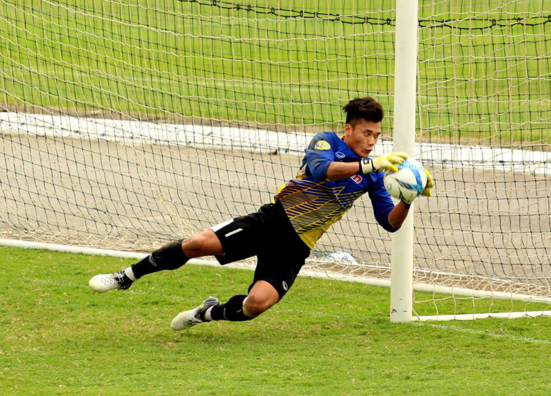

Giới thiệu chung
Thành công trên sân cỏ không chỉ phụ thuộc vào khả năng tấn công mà còn đòi hỏi một thủ môn xuất sắc. Trong bóng đá, vị trí thủ môn luôn được đánh giá cao, và để đạt được hiệu quả đó, mỗi cầu thủ cần nắm vững cách để làm thủ môn giỏi qua từng bài tập luyện và chiến thuật thi đấu. Bài viết này sẽ cung cấp cho bạn những kiến thức cốt lõi, phương pháp luyện tập và tâm lý thi đấu cần thiết, từ đó giúp bạn cải thiện kỹ năng và trở thành một thủ môn thực thụ. Nếu bạn đang tìm kiếm những bí quyết giúp phát triển kỹ năng, hãy bắt đầu hành trình của mình cùng bj88 để khám phá những bí mật đằng sau sự thành công trên sân cỏ.
Trong phần mở đầu, chúng ta sẽ cùng khám phá tại sao cách để làm thủ môn giỏi lại quan trọng và những yếu tố nào tạo nên sự khác biệt giữa một thủ môn trung bình và một thủ môn giỏi. Cùng với đó, việc nắm vững kiến thức kỹ thuật, luyện tập bài bản và duy trì phong cách thi đấu tự tin sẽ giúp bạn nâng cao hiệu suất thi đấu một cách rõ rệt.
Một thủ môn giỏi phải có thể lực và sự nhanh nhẹn để đáp ứng mọi tình huống phát sinh trong trận đấu. Điều này bao gồm:
Các bài tập tăng cường thể chất giúp cải thiện các yếu tố trên gồm:
Kỹ thuật là nền tảng vững chắc giúp thủ môn xử lý bóng một cách hiệu quả. Để đạt được điều đó, bạn cần chú trọng các khía cạnh sau:
Việc luyện tập cách để làm thủ môn giỏi luôn phải đi kèm với các bài tập chuyên sâu để cải thiện các kỹ thuật trên. Thực hành liên tục giúp tích lũy kinh nghiệm và nâng cao sự tự tin trong mỗi pha thi đấu.
Không chỉ dừng lại ở thể chất và kỹ thuật, yếu tố tâm lý cũng đóng vai trò quan trọng:
Để phát triển các yếu tố tâm lý này, việc tham gia các buổi huấn luyện chuyên sâu và tham khảo các kinh nghiệm từ các thủ môn thành công trên thế giới là điều không thể thiếu.
Để bắt đầu, dưới đây là một số bài tập cơ bản giúp cải thiện phản xạ và kỹ thuật bắt bóng:
Bài tập bắt bóng sệt:
Bài tập bắt bóng bổng:
Bài tập phân phối bóng:
Bài tập phản xạ:
Để đạt được hiệu quả cao, mỗi buổi tập luyện cần được tổ chức khoa học. Sau đây là một lịch tập mẫu mà bạn có thể áp dụng:
Các bài tập trên không chỉ giúp cải thiện kỹ thuật mà còn góp phần xây dựng sự tự tin và khả năng xử lý tình huống trong trận đấu. Việc kết hợp giữa luyện tập chuyên sâu và luyện tập nhóm sẽ tạo nên một thủ môn toàn diện, áp dụng được toàn bộ cách để làm thủ môn giỏi vào mọi tình huống thi đấu.
Nhiều huấn luyện viên và cầu thủ chuyên nghiệp đã chia sẻ những chia sẻ quý báu về quá trình rèn luyện:
“Một thủ môn giỏi không chỉ cần kỹ thuật bắt bóng xuất sắc mà còn cần có một tinh thần chiến đấu không bao giờ bỏ cuộc.”
– Nguồn: Các chuyên gia hàng đầu trong làng bóng đá
Ngoài ra, hãy thường xuyên cập nhật các xu hướng tập luyện mới và trao đổi kinh nghiệm với đồng đội. Những video hướng dẫn từ các kênh uy tín trên YouTube cũng sẽ là nguồn tham khảo hữu ích trong quá trình rèn luyện. Đừng quên theo dõi cách đá tiền vệ cánh sân 7 để có cái nhìn tổng quan về sự phối hợp giữa các vị trí trên sân.
Với những bài tập và kỹ thuật trên, bạn sẽ tự tin hơn khi đối mặt với các cú sút mạnh và tình huống rối rắm. Hãy nhớ rằng, sự kiên trì và lòng đam mê luôn là chìa khóa giúp bạn chinh phục những thử thách và trở thành một thủ môn chuyên nghiệp.
Để áp dụng cách để làm thủ môn giỏi vào thi đấu, bạn cần:
Thủ môn không chỉ làm nên thành công của đội bóng qua những pha bắt bóng mà còn cần phải duy trì tâm lý ổn định. Dưới đây là một số gợi ý để phát triển tinh thần thi đấu vững vàng:
Nhiều chuyên gia tâm lý thể thao đã nhấn mạnh rằng, sự tự tin và khả năng kiểm soát cảm xúc là yếu tố quan trọng để áp dụng thành công cách để làm thủ môn giỏi trong những tình huống căng thẳng. Họ cho rằng:
“Tâm lý vững vàng là nền tảng của mọi chiến thuật thi đấu. Khi tâm trí bạn minh mẫn, mọi kỹ năng về kỹ thuật đều trở nên hiệu quả hơn.”
– Chuyên gia Tâm Lý Thể Thao
Ngoài ra, bạn cũng nên tham gia vào các buổi huấn luyện tâm lý chuyên sâu và cùng đồng đội thực hành các bài tập giao tiếp, tăng cường tinh thần tập thể, qua đó xây dựng một môi trường thi đấu đoàn kết và hiệu quả.
Trong mỗi trận đấu, thủ môn phải linh hoạt điều chỉnh chiến thuật dựa trên diễn biến của trận đấu. Dưới đây là một số chiến lược mà bạn có thể áp dụng:
Qua toàn bộ bài viết này, chúng ta đã cùng nhau tìm hiểu những bí quyết từ cơ bản đến nâng cao trong cách để làm thủ môn giỏi. Từ việc rèn luyện thể chất, nắm vững kỹ thuật, đến phát triển tâm lý và xây dựng chiến lược thi đấu, mỗi yếu tố đều góp phần tạo nên một thủ môn xuất sắc. Hãy luôn nhớ rằng, sự kiên trì và tinh thần không ngừng học hỏi chính là chìa khóa để bạn tiến tới đỉnh cao thành công trên sân cỏ.
Hy vọng rằng bài viết đã cung cấp được những kiến thức bổ ích và thiết thực cho các bạn đam mê vị trí thủ môn. Hãy bắt đầu thực hành ngay hôm nay và đừng quên rằng mỗi bước tiến của bạn là minh chứng cho sự cố gắng và nỗ lực không ngừng. Chúc bạn sớm đạt được thành công và trở thành một thủ môn chuyên nghiệp, luôn tự tin đứng giữa khung thành, như lời cam kết của bj88.
Hãy nhớ áp dụng những bí quyết, bài tập và chiến lược trên vào thực tiễn để liên tục cải thiện trình độ của mình. Thành công sẽ đến với những người không ngừng nỗ lực và luôn tin vào chính khả năng của bản thân. Chúc bạn may mắn và thành công trong hành trình trở thành thủ môn giỏi thực thụ!